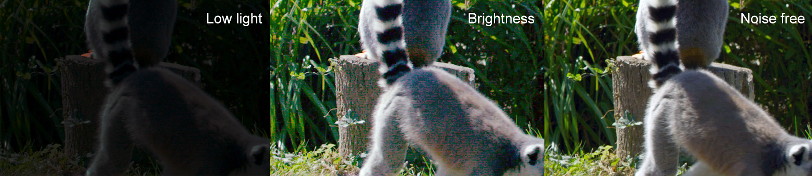
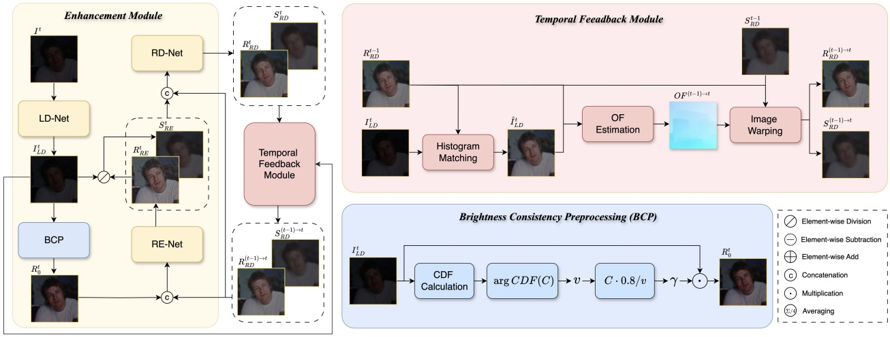
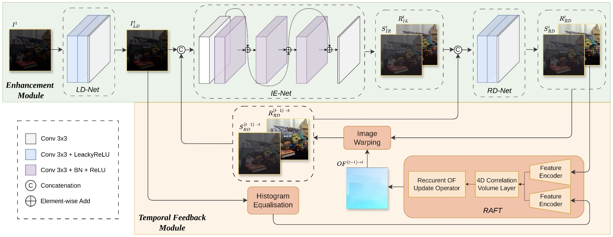

Aim
Acquiring high-quality video in challenging conditions—such as low light, heat haze, or adverse weather—is difficult, often resulting in degraded footage that hinders both human and machine interpretation. PriorPool addresses this by leveraging priors from high-quality videos with similar content to guide restoration and enhancement. The project develops an unsupervised framework that tackles blind inverse problems, combining robust content representations, prior retrieval, and context-aware optimisation. By exploiting the knowledge embedded in high-quality videos, PriorPool aims to overcome information loss and the lack of ground truth, enabling more accurate and effective video restoration.
Research team
- N. Anantrasirichai: Lead academic
- Alexandra Malyugina: Postdoctoral researcher, [Paper1] [Paper2]
- Yini Li (Lynn): PhD student, 2024-2028 (Co-supervisor: Prof David Bull),
[ Paper1] [Paper2] - Zhuodong Jiang (David): PhD student, 2026-2030 (Co-supervisor: Prof Alin Achim)
Methods

TempRetinex is an unsupervised Retinex-based video enhancement framework that exploits inter-frame correlations. It introduces Brightness Consistency Preprocessing (BCP) to align intensity across exposures, improving robustness to varied lighting. A multiscale temporal consistency loss with occlusion-aware masking enforces frame coherence, while Reverse Inference (RI) and Self-Ensemble (SE) further enhance temporal stability and denoising.

This work introduces Zero-TIG, a zero-shot learning approach for low-light video enhancement that combines Retinex theory with optical flow. The network includes an enhancement module, handling denoising, illumination estimation, and reflection removal, and a temporal feedback module that enforces consistency via histogram equalization, optical flow, and image warping. These components enable temporally coherent and visually consistent enhancement without paired training data.
[Project page]

TThis work proposes an unpaired learning method for simultaneous colorization and denoising of ultra-high-resolution videos. To address memory constraints at large scales, we introduce a multiscale patch-based framework that captures both local and contextual features, complemented by an adaptive temporal smoothing technique to suppress flickering artifacts.
Downloads
Publications
- TempRetinex: Retinex-based Unsupervised Enhancement for Low-light Video Under Diverse Lighting Conditions. Y Li, L Forster, D. Bull, and N. Anantrasirichai. In Proceedings of the IEEE International Conference on Multimedia and Expo. 2026 [PDF] [Code]
- [Best Student Paper Award Shortlist] Zero-TIG: Temporal Consistency-Aware Zero-Shot Illumination-Guided Low-light Video Enhancement. Y Li and N Anantrasirichai. 33rd European Signal Processing Conference, 2025
[ PDF] [Code] - Contextual colorization and denoising for low-light ultra high resolution sequences. N. Anantrasirichai and D. Bull. In Proceedings of the IEEE International Conference on Image Processing. 2021 [PDF] [Project page]
White papers
- Unsupervised Methods for Video Quality Improvement: A Survey of Restoration and Enhancement Techniques, A Malyugina, Y Li, J Lin, N Anantrasirichai, 2025 [PDF]
Datasets
Related research
Related publications from VI-Lab
- BVI-Mamba: video enhancement using a visual state-space model for low-light and underwater environments. G Huang, R Lin, Y Li, D Bull, N Anantrasirichai. Machine Learning from Challenging Data, 2025
[ PDF] [CODE] - Marine Snow Removal Using Internally Generated Pseudo Ground Truth. A Malyugina, G Huang, E Ruiz, B Leslie, N Anantrasirichai. 33rd European Signal Processing Conference, 2025
[ PDF] - A unified framework for contextual lighting, colorization and denoising for UHD sequences . N Anantrasirichai and D R Bull. IEEE ICIP, 2021
- Artificial intelligence in the creative industries: A review. N Anantrasirichai and D R Bull, Artif Intell Rev 55, 2022
- ST-MFNet Mini: Knowledge distillation-driven frame interpolation. C Morris, D Danier, F Zhang, N Anantrasirichai, D R Bull. IEEE International Conference on Image Processing. 2023